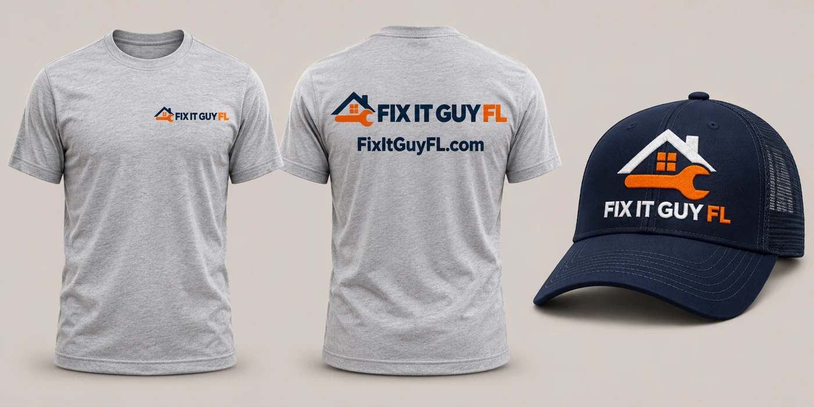

No job too small.
I’m Guy Mahon. I help homeowners tackle the repairs and installs that keep slipping to next weekend.
Tell Guy what needs fixingContact Guy →Home repairs
Drywall patches, sticking doors, and cabinet hardware
Mounting & assembly
TVs, shelves, blinds, and furniture
Florida home upkeep
Lanai screens, weatherstripping, and gate adjustments
Common repairs I can help with
Have a few things on your list? Select them below or describe them together in your request.
- Drywall, paint & trim — Patch nail holes and dents, touch up paint, and secure loose trim.
- Doors, cabinets & drawers — Adjust sticking doors and tighten loose hinges, handles, and drawer slides.
- Lanai, screens & gates — Replace torn screens and adjust sagging gates or worn latches.
- Caulk, grout & tile — Replace worn caulk, touch up grout, and repair small areas of damaged tile.
- Mounting & assembly — Mount TVs and shelves, hang blinds, and assemble furniture.
- Computers & Wi-Fi — Diagnose slow PCs and startup problems, upgrade storage or memory, and troubleshoot Wi-Fi dead zones.
What can Guy help with?
Search the task list or select items to include in your request. I’ll confirm availability based on your location and the job. Work requiring a license or permit is subject to applicable requirements.
153 tasks
Large projects and multi-day jobs 20 tasks
Medium jobs and single-area projects 30 tasks
Small repairs and maintenance calls 30 tasks
Odd jobs and specialty requests 20 tasks
Computer repair 12 tasks
Networking and home technology 10 tasks
Small engine repair 10 tasks
Oil changes, basic auto maintenance, and tires 11 tasks
RV repair and support 10 tasks
Your job list (0)
Select a task to add it here.
Contact Guy
Tell me what needs fixing and where the job is. Select tasks from the service directory or describe them here.
The Fix It Guy look
Our roof-and-wrench logo on a heather gray work shirt and a navy trucker hat.
